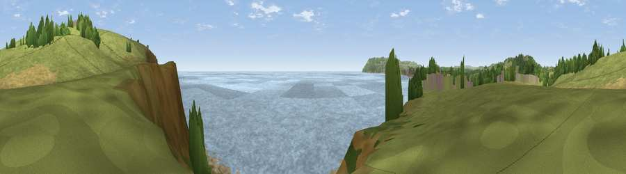

Viewpoint near Yaverland
#18943 in England · top 55% of its area beats it · near YaverlandThe view, rendered

A 360° render of this exact spot computed from the terrain model, tree cover and land cover — summer colours, afternoon light, calibrated against photographs of famous viewpoints. Real trees, hedges and buildings will differ in detail.
The panorama
Grey silhouette: terrain skyline in each direction (720 bearings, Earth curvature and refraction included). Dashed green: skyline with trees (+15 m) and buildings (+8 m) as obstacles. Blue strip: how far the ground is visible on each bearing.
Where the view opens
Wedge length = distance to the farthest visible ground on that bearing (vegetation-aware). Rings at 10, 25 and 50 km.
What fills the view
65% water · 21% grassland · 7% bare ground · 6% woodland ·
Angular shares of the visible panorama (visual magnitude), not map area. Landscape diversity 0.44 (0–1 Shannon).
Key numbers
More beautiful places nearby
The staircase of upgrades: each row has a higher view potential than everything closer. Driving times are estimates from straight-line distance, calibrated against real road routing — check an actual route before setting out.
| Place | Direction | Drive | Score |
|---|---|---|---|
| Viewpoint near Yaverland | NNE · 1 km | ~2 min | 78.6 |
| Viewpoint near Alverstone | WNW · 4 km | ~9 min | 79.1 |
| Viewpoint near Luccombe | SW · 7 km | ~14 min | 81.5 |
| Shanklin Down | SW · 7 km | ~15 min | 84.7 |
| Viewpoint near Upper Bonchurch | SSW · 8 km | ~16 min | 86.4 |
| Viewpoint near St. Lawrence | SW · 11 km | ~21 min | 88.2 |
| Viewpoint near Niton | SW · 16 km | ~28 min | 89.2 |
| Viewpoint near West Bexington | W · 107 km | ~131 min | 89.5 |
50.66513, -1.12436 · source: osm viewpoint · position refined by local search. Computed location — check access rights before visiting.